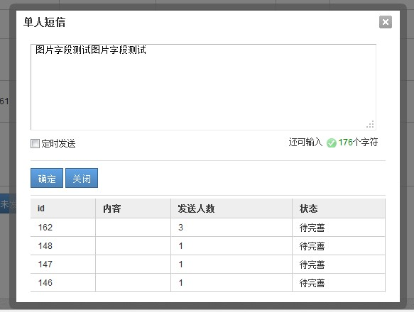

工作中碰到的一些东西【弹出窗口】【拖放】【异步文件上传】
久不出技术类文章，我都忘了自己是一程序员啦......今天写一点工作中遇到的东西，大家共同学习，反正也比较浅显了。
弹出窗口
我们在工作中，经常会碰到弹出窗口类应用，有时候还需要一点遮盖层：


这类圆角弹出框其实用得还是很广泛的，用CSS3可以很容易的出现，但是考虑到浏览器兼容问题，这类还是需要用图片实现了
主要代码如下：
//弹出层剧中
function popup(popupName) {
var _scrollHeight = $(document).scrollTop(); //获取当前窗口距离页面顶部高度
_windowHeight = $(window).height(); //获取当前窗口高度
_windowWidth = $(window).width(); //获取当前窗口宽度
_popupHeight = popupName.height(); //获取弹出层高度
_popupWeight = popupName.width(); //获取弹出层宽度
// _posiTop = (_windowHeight - _popupHeight) / 2 + _scrollHeight - 50;
_posiTop = _scrollHeight + 120;
_posiLeft = (_windowWidth - _popupWeight) / 2;
popupName.css({ "left": _posiLeft + "px", "top": _posiTop + "px", "display": "block" }); //设置position
}
function dragFunc(dragDiv, dragBody) {
if (dragDiv[0] && dragBody[0]) {
var dragAble = false;
var x1 = 0;
var y1 = 0;
var l = 0;
var t = 0;
var divOffset = dragBody.offset();
dragDiv.mousedown(function (e) {
var ss = this;
// var rootId =
dragDiv.css("cursor", "move");
dragAble = true;
// 当前鼠标距离div边框的距离
// 当前鼠标坐标，减去div相对左边的像素
l = parseInt(dragBody.css("left"));
t = parseInt(dragBody.css("top"));
x1 = e.clientX - l;
y1 = e.clientY - t;
x1 = x1 > 0 ? x1 : 0;
y1 = y1 > 0 ? y1 : 0;
this.setCapture && this.setCapture();
});
dragDiv.mousemove(function (e) {
if (!dragAble)
return;
// 当前div左边的坐标
// 当前鼠标坐标，减去鼠标拖动量
var x2 = 0;
var y2 = 0;
//需要考虑滚动条问题！！！
var top = $(document).scrollTop() ? $(document).scrollTop() - 15 : 0;
var left = $(document).scrollLeft() ? $(document).scrollLeft() - 15 : 0;
x2 = e.clientX - x1 + left;
y2 = e.clientY - y1 + top;
x2 = x2 > 0 ? x2 : 0;
y2 = y2 > 0 ? y2 : 0;
//要移动一定数量才移动
if (Math.abs(l - x2) > 10 || Math.abs(t - y2) > 10) {
dragBody.css("left", x2 + "px");
dragBody.css("top", y2 + "px");
}
});
dragDiv.mouseup(function (event) {
if (!dragAble)
return;
dragAble = false;
// dragDiv.css("position", "relative");
this.releaseCapture && this.releaseCapture();
});
}
}
var MyDialog = function (cfg) {
this.config = {
id: (new Date()).getTime().toString(),
el: null,
bodyId: null,
cover: true,
boxHtm: '<div class="dialog" > ' +
'<table> ' +
' <tr class="top"> ' +
' <td class="tl"> ' +
' </td> ' +
' <td class="c"> ' +
' </td> ' +
' <td class="tr"> ' +
' </td> ' +
' </tr> ' +
' <tr> ' +
' <td class="c"> ' +
' <div style="width:10px;"></div>' +
' </td> ' +
' <td class="main"> ' +
' <div class="title"> ' +
' <h3> ' +
' <span class="title_text">请输入标题</span> <a class="cls" href="javascript:;"></a> ' +
' </h3> ' +
' </div> ' +
' <div class="content"> ' +
' 请输入内容 ' +
' </div> ' +
' </td> ' +
' <td class="c"> ' +
' </td> ' +
' </tr> ' +
' <tr class="bottom"> ' +
' <td class="bl"> ' +
' </td> ' +
' <td class="c"> ' +
' <div style="width:10px;"></div>' +
' </td> ' +
' <td class="br"> ' +
' </td> ' +
' </tr> ' +
'</table> ' +
'</div>'
};
var scope = this;
if (cfg) {
$.each(cfg, function (key, value) {
scope.config[key] = value;
});
}
this.box = null;
this.cover = null;
this.tmpBody = null;
}
MyDialog.prototype.show = function () {
var scope = this;
var cover = null;
var box = null;
if (this.config.cover) {
if (this.config.id && $('#' + this.config.id + '_cover')[0]) {
cover = $('#' + this.config.id + '_cover');
cover.show();
} else {
cover = $('<div style=" display:block; " id="' + this.config.id + '_cover" class="coverDiv" ></div>');
$('body').append(cover);
}
scope.cover = cover;
}
if (!$('#' + this.config.id)[0]) {
box = $(this.config.boxHtm);
$('body').append(box);
box.attr('id', this.config.id);
if (this.config.title) {
box.find('.title_text').html(this.config.title);
}
if (this.config.bodyId) {
var body = $('#' + this.config.bodyId);
var tmp = $('<div></div>').append(body);
var initBody = tmp.html();
scope.tmpBody = $(initBody);
tmp = null;
if (body[0]) {
var con = box.find('.main .content');
body.show();
con.html('');
con.append(body);
}
}
if (this.config.el && this.config.el[0]) {
var con = box.find('.main .content');
con.html(this.config.el);
}
//居中
popup(box);
//关闭dialog
box.find('.title .cls').click(function (e) {
scope.close();
e.preventDefault();
return false;
});
dragFunc($('#' + this.config.id + ' .main .title'), $('#' + this.config.id));
box.show();
this.box = box;
}
}
MyDialog.prototype.close = function () {
//这里有问题
var box = this.box;
var tmpBody = this.tmpBody;
var cover = this.cover;
if (tmpBody && tmpBody[0]) {
$('body').append(tmpBody);
}
if (box && box[0]) {
box.remove();
}
if (cover && cover[0]) {
cover.hide();
}
};
调用方法：
var dia = new MyDialog({
title : title,
bodyId : id,
id : id + '_box'
});
dia.show();
具体可能还需要一定函数回调，各位可以自己封装一番。
拖放
工作中也经常会出现拖放效果的一些需求：

代码如下：
<!DOCTYPE html PUBLIC "-//W3C//DTD XHTML 1.0 Transitional//EN" "http://www.w3.org/TR/xhtml1/DTD/xhtml1-transitional.dtd">
<html xmlns="http://www.w3.org/1999/xhtml">
<head>
<title></title>
<script src="http://www.cnblogs.com/scripts/jquery-1.7.1.js" type="text/javascript"></script>
<script type="text/javascript">
function dragFunc(dragDiv, dragBody, dropBody) {
if (!dropBody[0]) {
dropBody = $(document);
}
if (dragDiv[0] && dragBody[0]) {
var dragAble = false;
var x1 = 0;
var y1 = 0;
var l = 10;
var t = 10;
var init_position = '';
var init_cursor = '';
var tmp_body = null;
dragDiv.mousedown(function (e) {
var ss = this;
init_position = dragBody.css("position");
init_cursor = dragBody.css("init_cursor");
dragBody.css("position", "absolute");
dragDiv.css("cursor", "move");
tmp_body = $('<div class="tmp_div"></div>');
tmp_body.css('width', dragBody.css('width'));
tmp_body.css('height', dragBody.css('height'));
tmp_body.insertAfter(dragBody);
$(document).bind("selectstart", function () { return false; });
dragAble = true;
// 当前鼠标距离div边框的距离
// 当前鼠标坐标，减去div相对左边的像素
l = parseInt(dragBody.css("left")) ? parseInt(dragBody.css("left")) : 10;
t = parseInt(dragBody.css("top")) ? parseInt(dragBody.css("top")) : 10;
var offset = dragBody.offset();
l = parseInt(offset.left);
t = parseInt(offset.top);
x1 = e.clientX - l;
y1 = e.clientY - t;
x1 = x1 > 0 ? x1 : 0;
y1 = y1 > 0 ? y1 : 0;
this.setCapture && this.setCapture();
});
dragDiv.mousemove(function (e) {
if (!dragAble)
return;
// 当前div左边的坐标
// 当前鼠标坐标，减去鼠标拖动量
var x2 = 0;
var y2 = 0;
//需要考虑滚动条问题！！！
var top = $(document).scrollTop() ? $(document).scrollTop() - 15 : 0;
var left = $(document).scrollLeft() ? $(document).scrollLeft() - 15 : 0;
x2 = e.clientX - x1 + left;
y2 = e.clientY - y1 + top;
x2 = x2 > 0 ? x2 : 0;
y2 = y2 > 0 ? y2 : 0;
//要移动一定数量才移动
if (Math.abs(l - x2) > 10 || Math.abs(t - y2) > 10) {
dragBody.css("left", x2 + "px");
dragBody.css("top", y2 + "px");
}
//红 #993300
//灰 #DBEAF9
//移动结束后判断拖放
var w = parseInt(dragBody.css('width'));
var h = parseInt(dragBody.css('height'));
$.each(dropBody, function () {
var el = $(this);
el.css('background-color', 'Gray');
var offset = el.offset();
var _l = offset.left || 0;
var _t = offset.top || 0;
var _w = parseInt(el.css('width'));
var _h = parseInt(el.css('height'));
if (x2 > _l && x2 + w < _l + _w && y2 > _t && y2 + h < _t + _h) {
el.css('background-color', '#DBEAF9');
el.append(tmp_body);
}
var s = '';
});
});
dragDiv.mouseup(function (event) {
if (!dragAble)
return;
$(document).unbind("selectstart");
//还原position 与 cursor
dragBody.css("position", init_position);
dragBody.css("cursor", init_cursor);
//dragBody.css("left", '0');
//dragBody.css("top", '0');
if (tmp_body) {
dragBody.insertAfter(tmp_body);
var offset = tmp_body.offset();
l = parseInt(offset.left);
t = parseInt(offset.top);
dragBody.css("left", l);
dragBody.css("top", t);
tmp_body.remove();
}
dragAble = false;
// dragDiv.css("position", "relative");
this.releaseCapture && this.releaseCapture();
});
}
}
$(document).ready(function () {
var d1 = $('#d1');
var c = $('.c');
dragFunc(d1, d1, c);
});
</script>
<style type="text/css">
div
{
width: 100px;
height: 100px;
border: 1px solid black;
}
.tmp_div
{
border-style: dashed;
}
#c1
{
background-color: Gray;
width: 300px;
height:300px;
float:left;
margin:20px;
}
#c2
{
background-color: Gray;
width: 300px;
height:300px;
float:left;
margin:20px;
}
</style>
</head>
<body>
<div id="c1" class="c">1
<div id="d1">me
</div>
</div>
<div id="c2" class="c">2
</div>
</body>
</html>
异步文件上传
我们所谓的AJAX异步文件上传事实上用js技术好像暂时还不能实现，就我所谓的异步上传事实上还是表单提交，而将form的target指向一
隐藏的iframe，然后成功后回调即可，真是十分坑爹的做法。。。。。
若是要更好的体验，便需要借助flash或者XX框架了，但是我也没有研究过.
<form id="formImg" name="formImg" enctype="multipart/form-data" method="post" action="">
<input type="hidden" name="MAX_FILE_SIZE" value="800000" id="max_size"/>
<input type="hidden" name="callback" value="parent.add_img_input" id="callback"/>
<a class="upbtn"><input type="file" name="userfile" id="userfile" title="支持JPG、GIF、PNG格式，文件小于1M"
name="pic" value="" onchange="javascript:up_img(17);">上传</a>
</form>
document.charset='utf-8';
var form = $('#formImg');
var frame = $('#frame_img');
if (!frame[0]) {
frame = $('<iframe id="frame_img" name="frame_img" style="display:none;" ></iframe>');
}
form.append(frame);
form.attr('target', 'frame_img');
form.attr('action', url);
form.submit();
document.charset='gbk';
但是回调会涉及一点跨域的问题，需要在同一大域名下才行。
现况
爱生活，爱工作，今年继续努力吧！